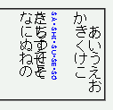

writing-modeプロパティ（IE独自拡張）を用いて縦書きにした要素内に子孫要素を持つrt要素があるとき、rt要素が前後の行と重なって表示されてしまう。縦書きにした要素にline-heightプロパティが指定されているときに発生する。
<p style="line-height:1; writing-mode:tb-rl;">あいうえお<br> かきくけこ<br> <ruby><rb>さしすせそ</rb><rp>（</rp> <rt><span style="color: blue;">SA・SHI・SU・SE・SO</span></rt> <rp>）</rp></ruby><br> たちつてと<br> なにぬねの</p>
あいうえお
かきくけこ
たちつてと
なにぬねの
WinIE6.0での表示（標準モード）
WinIE6.0では標準・互換モードともに不具合の発生を確認しました。